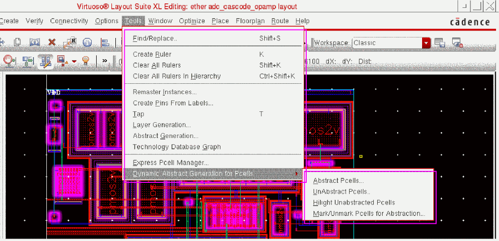

Dynamic Abstract Generation Commands
You can use the Dynamic Abstract Generation commands to abstract, unabstract, highlight, mark, and unmark Pcells.
A submenu is displayed with the commands shown in the figure below.

Related Topics
Dynamic Abstract Generator Context-Sensitive Menu
Highlighting Unabstracted Pcells
Marking or Unmarking Pcells for Abstraction
Return to top